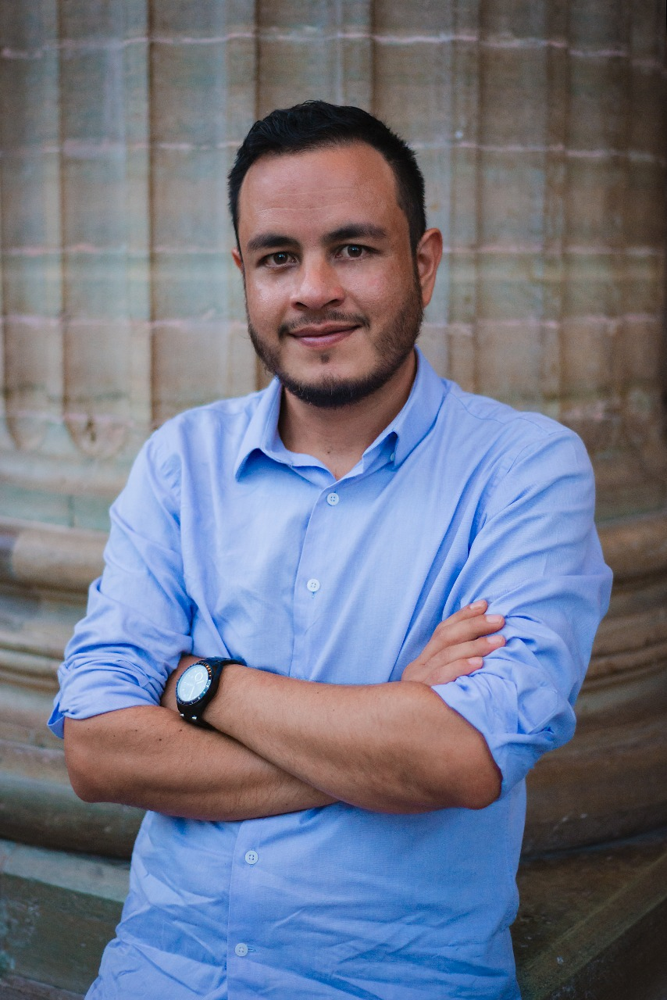

Orlando Cabrera

Summary
Electronic and telecommunications engineer with over 10 years of experience in mobile technologies (RAN Integration).
Integration expert in GSM 2G, WCDMA 3G, LTE 4G, NR 5G, controllers (BSC, RNC) and routers (6K series) configuration.
RBS configuration capacity analysis (power, license, hardware limitations), troubleshooting strong capacity.
Scripting generation and troubleshooting, software upgrades, CSR´s, network audits, documentation and processes optimization.
Team lead strong competence, mentoring, customer service, professionalism, adaptability, compromise, organization.
Education
Electronic and telecommunications engineer
Universidad de la Salle Bajío 2011
Work Experience
Skills
- OSS/ENM
- Data processes
- Vbscripts, Python, Moshell, Javascript, SQL
- Wireshark, packet tracer, Power Bi
- Cisco switches/routers
- Remote and multicultural work
- Best practices and ways of working
Achievements
- I was part of the team that implemented the first LTE network, GSM/WCDMA networks modernization and its expansion into Cuban mobile operator.
- Design and implement the 4th WCDMA carrier for Chilean mobile operator.
- Network configuration recovery for GSM, WCDMA, LTE networks after natural disasters (hurricane) in Caribbean mobile operators.
- Design and implement the procedure to configure the LTE security protocol for Cuban and Puerto Rico mobile operators.
Other